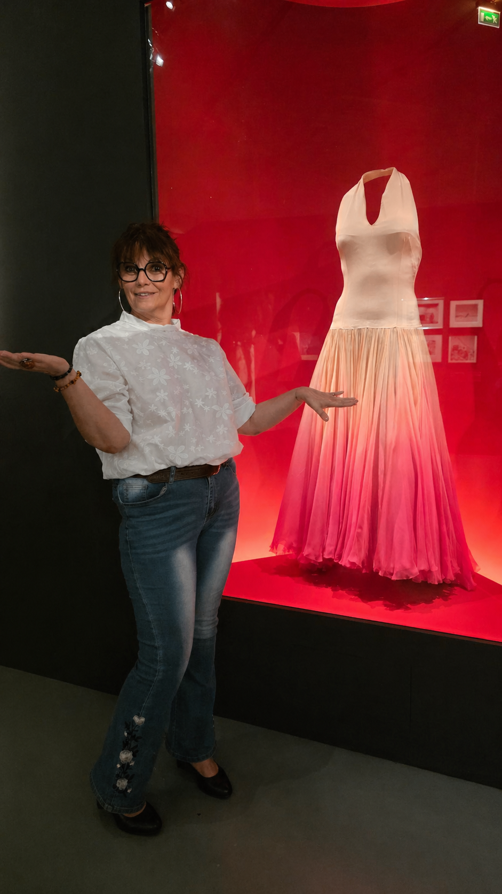

Marilyn Monroe : Ce que son corps révélait... et ce que le Shiatsu permet de comprendre
On a longtemps réduit Marilyn Monroe à une image de papier glacé. Pourtant, l’exposition actuelle à la Cinémathèque Française (Paris-Bercy) nous rappelle une réalité bien plus profonde : Marilyn était une femme d’une intelligence rare, une pionnière ayant fondé sa propre société de production.

En énergétique orientale, ce destin nous enseigne une leçon précieuse sur l’équilibre entre notre rayonnement extérieur et notre écologie intérieure.
L’intelligence du corps : Quand le mental dépasse les limites
Marilyn Monroe incarnait une énergie Yang fulgurante : la lumière des projecteurs, l'action, et cette volonté de fer propre aux bâtisseuses. Mais en Médecine Traditionnelle Chinoise (MTC), on sait qu'un excès de "Feu" (la visibilité) sans un "Ancrage" solide finit par consumer ses racines.

L’histoire de Marilyn, c’est celle d’une dualité que nous rencontrons souvent en cabinet :
- Le Qi externe : Une présence maîtrisée, un charisme puissant.
- Le Qi interne : Une fatigue invisible, un besoin de sécurité et de repos profond souvent négligé.
Pourquoi le Shiatsu est une réponse pour les "femmes actives"
Marilyn Monroe Productions était la preuve de son ambition. Aujourd'hui, comme elle, de nombreuses femmes jonglent avec une charge mentale immense et une exigence de performance constante.
Le corps ne ment jamais. Derrière le sourire et l'efficacité, il exprime parfois un vide d'énergie (Kyo), des tensions nerveuses liées au stress ou une déconnexion entre le mental et le ressenti physique.

Le Shiatsu : Retrouver son centre (Le Hara)
Contrairement aux soins purement esthétiques, le Shiatsu ne travaille pas sur l’image, mais sur le vivant. Il permet de :
- Apaiser le système nerveux : Passer du mode "action perpétuelle" au mode "récupération".
- Renforcer le Yin : Nourrir l'intériorité et la structure pour ne plus s'épuiser.
- Réunifier : Réconcilier la femme d'action que vous êtes avec vos besoins profonds.
Le mot de la fin : On peut briller à l’extérieur sans s'éteindre à l’intérieur. Le Shiatsu est ce chemin qui permet de cultiver une présence durable, ancrée et consciente.
✨ Vous prévoyez une visite à la Cinémathèque ? Prolongez l'expérience en écoutant ce que votre propre corps a à vous dire.
Prenez rendez-vous pour une séance de Shiatsu